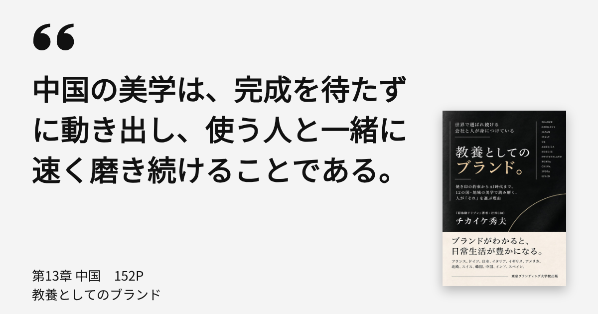

教養としてのブランド / 第13章 中国『速度と実装の美学』
中国の美学は、完成を待たずに動き出し、使う人と一緒に速く磨き続けることである。
『教養としてのブランド』第13章 中国『速度と実装の美学』（152ページ）「この章から持ち帰る一言」より。著者：チカイケ秀夫

『教養としてのブランド』は、12の国・地域の美学から、人が「それ」を選ぶ理由を読み解くブランドの教養書です。全23章をnoteで期間限定・無料公開しています（マガジン）。
第13章 中国『速度と実装の美学』の5つの言葉
- 中国の美学は、完成を待たずに動き出し、使う人と一緒に速く磨き続けることである。（152P）
- 中国のブランドは、完璧に仕上がるのを待ちません。（144P）
- 速さそのものが、価値になっているのです。（145P）
- 速く改良が進むブランドの製品は、買ったあとも進化します。（148P）
- アイデアを、驚くほど短い時間で「実物」にできるのです。（145P）